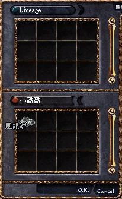
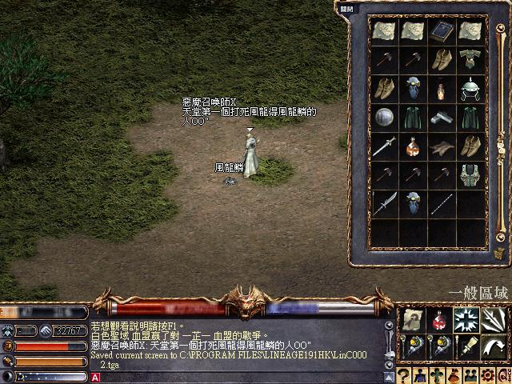

|
2002年8月11日
美國伺服器風龍鱗的入手方法
來源：Lineage Compendium
中文翻譯：Lineage: The Fact 天堂．真相
最近大家都對風龍鱗是否存在及在那裡可以得到都感到非常混亂，究竟風龍林德拜爾是否已經在遊戲中？如果是真的，在那兒？假如不是真的，風龍鱗從何處來？
假果大家還記憶猶新的話，官方曾經說過"龍的棲息地區有少量的機會會找到龍鱗"，由於風龍棲息在那還是未知之數，因此牠的龍鱗會出現在整個亞丁大陸。我們曾經訪問過Ken伺服器的妖精Frodo，他曾買了一塊和找到兩塊風龍鱗，他說他那兩塊風龍鱗是在歐瑞及妖精森林找到的。
因此風龍鱗的確存在，但卻沒有風龍可以殺，你只需要有運氣便可以找到！假如你還有銀蛇鱗的話（美國伺服器專有），不妨把它們掉在地上，風龍鱗的樣子就是這樣。祝大家好運！
本網按：風龍早前的設定是沒有特定的棲息地區，牠會在整個亞丁大陸出現及飛來飛去，可以說整個亞丁大陸都是牠的棲息地區，因此大家可以在亞丁大陸的地面上找到風龍鱗。
香港伺服器出現了風龍鱗
鳴謝玩家惡魔召喚師X，緒及小麟麟提供消息！在8月8日本網首次收到了有玩家得到風龍鱗的圖片，經昨天本網人員在交易視窗看過後，已經證實了風龍鱗的確是存在的！但由於風龍還未開放，因此入手方面仍然是一個謎；究竟是從某些怪物身上打到，還是在亞丁大陸上地上拾到呢？


|